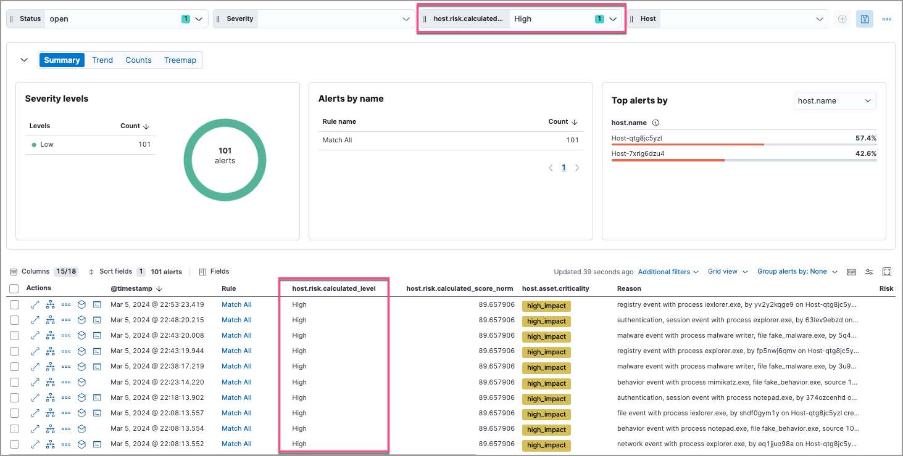
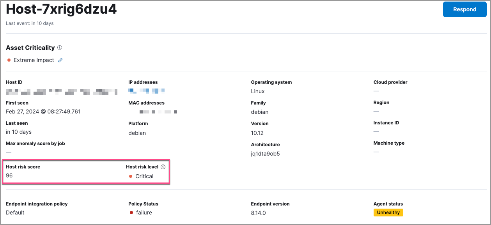

View and analyze risk score dataedit
The Elastic Security app provides several options to monitor the change in the risk posture of hosts and users from your environment. Use the following places in the Elastic Security app to view and analyze risk score data:
We recommend that you prioritize alert triaging to identify anomalies or abnormal behavior patterns.
Entity Analytics dashboardedit
From the Entity Analytics dashboard, you can access entity key performance indicators (KPIs), risk scores, and levels. You can also click the number link in the Alerts column to investigate and analyze the alerts on the Alerts page.

Alert triagingedit
You can prioritize alert triaging to analyze alerts associated with risky or business-critical entities using the following features in the Elastic Security app.
Alerts pageedit
Use the Alerts table to investigate and analyze:
- Host and user risk levels
- Host and user risk scores
- Asset criticality
To display entity risk score and asset criticality data in the Alerts table, select Fields, and add the following:
-
user.risk.calculated_levelorhost.risk.calculated_level -
user.risk.calculated_score_normorhost.risk.calculated_score_norm -
user.asset.criticalityorhost.asset.criticality
Learn more about customizing the Alerts table.
Triage alerts associated with high-risk entitiesedit
To analyze alerts associated with high-risk entities, you can filter or group them by entity risk level.
-
Use the drop-down filter controls to filter alerts by entity risk level. To do this, edit the default controls to filter by
user.risk.calculated_levelorhost.risk.calculated_level: -
To group alerts by entity risk level, select Group alerts by, then select Custom field and search for
host.risk.calculated_leveloruser.risk.calculated_level.-
You can further sort the grouped alerts by highest entity risk score:
- Expand a risk level group, for example High.
- Select Sort fields → Pick fields to sort by.
-
Select fields in the following order:
-
host.risk.calculated_score_norm`or `user.risk.calculated_score_norm: High-Low -
Risk score: High-Low -
@timestamp: New-Old
-
-
Triage alerts associated with business-critical entitiesedit
To analyze alerts associated with business-critical entities, you can filter or group them by entity asset criticality.
If you change the entity’s criticality level after an alert is generated, that alert document will include the original criticality level and will not reflect the new criticality level.
-
Use the drop-down filter controls to filter alerts by asset criticality level. To do this, edit the default controls to filter by
user.asset.criticalityorhost.asset.criticality: -
To group alerts by asset criticality level, select Group alerts by, then select Custom field and search for
host.asset.criticalityoruser.asset.criticality.-
You can further sort the grouped alerts by highest entity risk score:
- Expand an asset criticality group, for example high_impact.
- Select Sort fields → Pick fields to sort by.
-
Select fields in the following order:
-
host.risk.calculated_score_norm`or `user.risk.calculated_score_norm: High-Low -
Risk score: High-Low -
@timestamp: New-Old
-

-
Alert details flyoutedit
To access risk score data in the alert details flyout, select Insights → Entities on the Overview tab:
Hosts and Users pagesedit
On the Hosts and Users pages, you can access the risk score data:
-
In the Host risk level or User risk level column on the All hosts or All users tab:

-
On the Host risk or User risk tab:
Host and user details pagesedit
On the host details and user details pages, you can access the risk score data:
-
In the Overview section:
 -
On the Host risk or User risk tab:
Host and user details flyoutsedit
In the host details and user details flyouts, you can access the risk score data in the risk summary section: